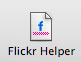
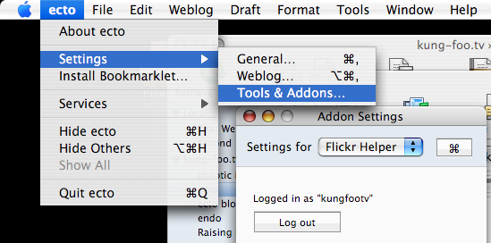

Atom 0.3 blog system
Since a few blog systems out there (LOVELOG, Livedoor Blog, etc) haven't upgraded to Atom 1.0, I have made this plugin available. Download Atom03.zip (19Kb). Double-click to install or manually copy to the ~/Library/Application Support/ecto3/blogsystems/ directory. Once installed, select "Account Manager" from the Window menu and configure your blog to use the installed add-on.
ecto3でLivedoorの設定の指示はこちらです。
iTunes add-on
A plugin that will insert the currently playing track in iTunes into the text you're editing. Download itunes.zip (26.1Kb). Double-click to install or manually copy to the ~/Library/Application Support/ecto3/addons/ directory.
Usage
Once the addon is installed, launch ecto. You can invoke the add-on from the Tools menu or the draft window's toolbar. To change settings, go to Settings under the ecto menu and choose the Tools & Addons… menu item. Select the "iTunes" item from the popup and configure to your liking.
Stand In Silence from the album "So Divided" by And You Will Know Us By The Trail Of Dead
BlogEngine.NET blog system
A plugin specifically configured for the BlogEngine.NET blog system. The add-on has support for pages. Download BlogEngineNET.zip (22Kb). Double-click to install or manually copy to the ~/Library/Application Support/ecto3/blogsystems/ directory. Once installed, select "Account Manager" from the Window menu and configure your blog to use the installed add-on.
Flickr Helper
 Flickr Helper is a new add-on that is included in ecto by default (ecto3b23 and up). Its purpose is to easily search for and browse pictures from Flickr. Once you've found one, you can then insert a smaller version of the picture it in your blog post complete with a link to the original page on Flickr. To use it, just open an existing or new draft, place the insertion point where you want the Flickr picture to appear and click on "Flickr Helper" in the toolbar (or choose the commend from the Tools menu in the menu bar). A sheet slides down with 5 different search options: Your pictures, your contacts, your sets, your groups, or tags.

You can search for tags anytime, but if you want to search in the other options, you will need to authorize first. You can do that via the Tools & Add-ons settings. I recommended logging into your Flickr account via the browser first before authorizing the Flickr Helper add-on.

Other than that, using Flickr Helper is pretty straight-forward. If you have questions, feel free to ask in the Support Forum.
The image browser in the add-on is an implementation of a simplified version of MUPhotoView.
Growl add-on
A plugin that will pop up Growl notifications after completing several actions, such as retrieving blog posts or publishing a draft. Download GrowlNotifier.zip (70.9Kb). Double-click to install or manually copy to the ~/Library/Application Support/ecto3/addons/ directory.
Usage
Once the addon is installed, launch ecto. Go to Settings under the ecto menu and choose the Weblog… menu item. Click the "Editing" tab and then the "Defaults" sub-tab. Turn on "Send notifications".
Twitter add-on
A plugin that will send a twitter after you publish a blog entry. Download Twitter.zip (85.3Kb). Double-click to install or manually copy to the ~/Library/Application Support/ecto3/addons/ directory.
Usage
Once the addon is installed, launch ecto. Go to Settings under the ecto menu and choose the Tools & Addons… menu item. Select the settings pane for Twitter. Enter your login credentials and a twitter template (you can leave it blank to use the default template). Then, go to the Settings menu again and choose the Weblog… menu item. Click the "Editing" tab and then the "Defaults" sub-tab. Turn on "Send notifications" so that the Twitter add-on will be invoked when you publish a blog post.
Blojsom blog system
A plugin specifically configured for the Blojsom blog system. Download Blojsom.zip (15.6Kb). Double-click to install or manually copy to the ~/Library/Application Support/ecto3/blogsystems/ directory. Once installed, select "Account Manager" from the Window menu and configure your blog to use the installed add-on.
Conversant blog system
A plugin specifically configured for the Conversant blog system. Download Conversant.zip (16.8Kb). Double-click to install or manually copy to the ~/Library/Application Support/ecto3/blogsystems/ directory. Once installed, select "Account Manager" from the Window menu and configure your blog to use the installed add-on.